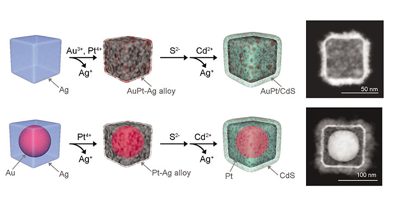
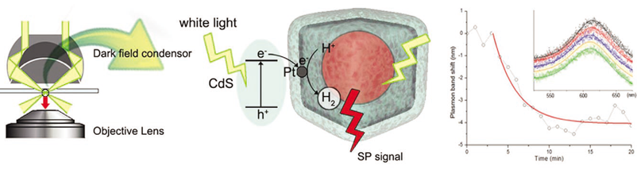

KAIST Top 10
KAIST Top 10
KAIST RESEARCH ACHIEVEMENTS
Monitoring of Catalytic Hydrogen Generation on an Individual Particle Surface
Department of Chemistry Hyunjoon Song
Summary
"Catalysts" plays a very crucial role in the current industrial era, and development of high-performance catalysts is a core technology for the production of next-generation energy using naturally plentiful resources, such as water, sunlight, and carbon dioxide. Recently, in order to overcome the limitations of catalytic efficiency and selectivity, development of 'nanocatalyst' technology, which combines nanotechnology and catalysis, is a topic of focus. In the near future, it. would be plausible to design and uniformly fabricate size, shape, surface morphology and hybrid. structure of the catalysts through nanosynthetic tools, for the core reactions of next-generation energy technology, including hydrogen generation, fuel cell reactions, biomass conversion, and CO2 reduction reactions. Moreover, it would be possible to monitor individual molecules, produced on the particle surface through the process of wanted reactions. Feedbacks from the reaction information can improve nanocatalyst design, which leads to the enhancement of high efficiency, selectivity, and durability of wanted reactions with a low energy consumption. Eventually, development of the nanocatalysts, which are optimized for current petroleum, polymer, and fine chemical industries and next-generation energy production and environment, will be able to revolutionize future industries and human life.
R&D Report

This approach is versatile for the monitoring of various heterogeneous reactions with distinct components at a single-particle level. Optimization of the measurement using a laser light source would allow the monitoring of fast reactions with extremely high sensitivity up to the molecular level. Such information will be able to help gain an acute understanding for the development of high-performance nanocatalysts. The development of catalysts for wanted reactions, especially for energy production, is highly significant, but the current technology only approaches at a bulk level. The present study successfully controlled the structure of hybrid photocatalysts using nanosynthetic technology, and monitored the hydrogen gas generation reactions on the surface of individual particles in real-time by single-particle dark-field spectroscopy, for a fundamental understanding of reaction mechanisms and monitoring. This approach is versatile for the monitoring of most heterogeneous reactions, and thus significantly contributes to the development of catalysts critical for industries.
Synthesis of hollow nanoparticles of platinized cadmium sulfide/ gold using nanosynthetic technology
Multi-layered hollow nanocubes were synthesized via a three-step process, i.e. Galvanic replacement, sulfidation, and cation exchange, from silver nanocubes. The platinized cadmium sulfide works as an active catalyst of hydrogen generation, and the hydrogen gas produced by the catalyst is accumulated inside the cavity of the hollow structure. The gold domain behaves as a probe scattering the light and monitoring the reaction.

Investigation of the hydrogen generation reaction on an individual particle
The hydrogen generation reaction through the decomposition of lactic acid is monitored by single-particle dark-field spectroscopy during the reaction progress. The rate constant and structural information (including the diffusion coefficient through the shell and the relative arrangement of the active sites) can be estimated for individual catalyst particles, by plasmon band shifts of the gold probes and simulation of the reaction kinetics.

Research Funding
Core Research Program and Advanced Research Center Program (ERC) of a National Research Foundation (NRF) funded by the Korean Government.
Research Results
Published in J. Am. Chem. Soc. 2012, 134, 1221-1227. Further researches are in progress.